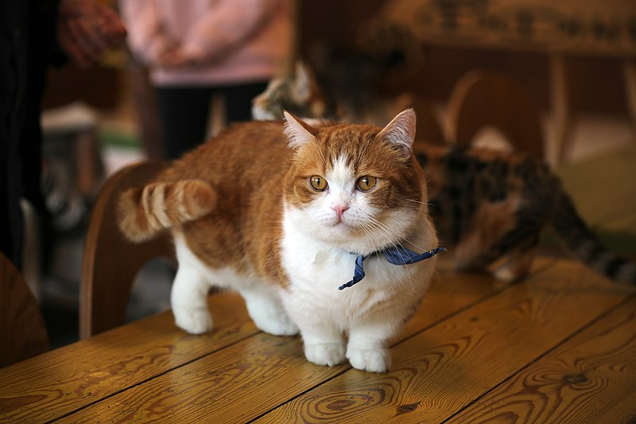

먼치킨(Munchkin cat)은 고양이의 한 품종이다. 다른 고양이 품종들에 비해 짧은 다리를 가진 것이 특징인데, 이는 인공 교배 등을 통한 것이 아닌, 자연적으로 발생한 것이다. 먼치킨의 원산지는 미국이다. 1995년 국제고양이협회(TICA)는 먼치킨을 공식적인 고양이 품종으로 인정했다.
먼치킨이라는 이름은 라이먼 프랭크 바움이 쓴 《오즈의 마법사》에 나오는 키 작은 주민인 먼치킨에서 유래한 것이다.
미국 루이지애나주의 음악 교사였던 산드라 호첸델(Sandra Hochenedel)은 우연히 임신한 상태로 거리를 돌아다니던 암컷 고양이를 발견하고, 그 고양이를 집으로 데려가 '블랙베리'(Blackberry)라는 이름을 붙인다. 블랙베리는 2마리의 고양이를 낳게 된다. 산드라 호첸델은 그 고양이들 중 다리가 짧은 수컷 고양이인 '툴루즈'(Toulouse)를 친구에게 보냈고, 이 고양이가 다른 고양이들과 교배하면서 오늘날의 먼치킨 고양이가 탄생하게 되었다.
|  |
|---|
| 계:동물계 |
| 문:척삭동물문 |
| 강:포유강 |
| 목:식육목 |
| 과:고양잇과 |